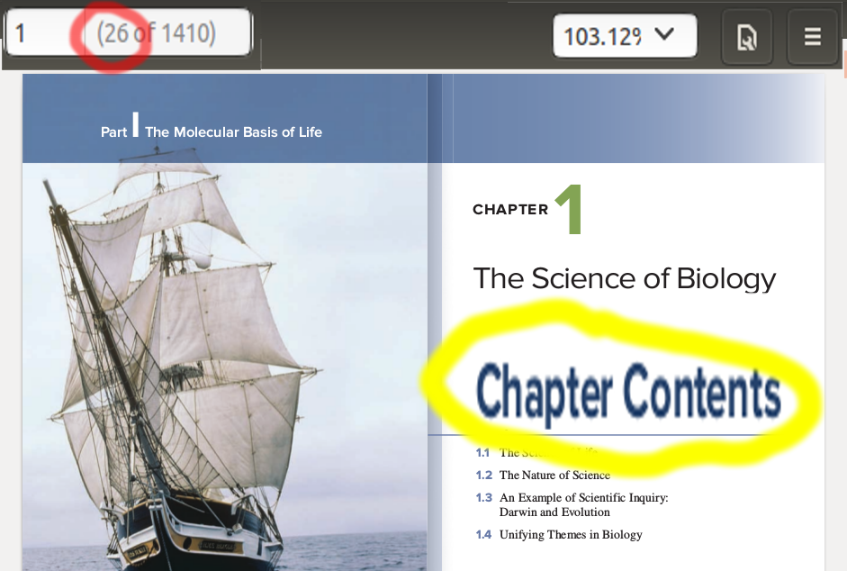
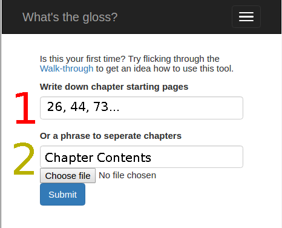

Walk-through

- Pick a way to differentiate between chapters. If there is a special phrase to indicate the start of a chapter e.g. "Chapter Contents" then go to a. If no such phrase exists than go to b
- In the above example we could use the phrase Chapter Contents to signal the start of each chapter, we can check that this only appears at the start of each chapter by using CTRL-F. Another option would be to use the phrase CHAPTER. All phrases are case sensitive and regex is also accepted.
- In other cases we can signal the start of chapters by writing in the page number. The above example has an index of '1' but it is actually the 26th page in the document. Therefore we type the number 26 into the form and continue the process for each chapter
- Click the Choose file button to select your PDF document and then press Submit
- You will be redirected to a glossary once the file has been uploaded and processed, this can take a few minutes

Warning:
PDF's are not necessarily a machine readable file type. Some PDF's can be simply be image scans while others have non-standard formatting. If there's been a problem processing your PDF then another option is to open the PDF in adobe reader, scroll out so you can see multiple pages and press CTRL-A. Copy this to a txt file and upload it the same way.
txt files do not have page numbers and so you will have to use a phrase to seperate different chapters. If no such phrase exists you might try inserting the phrase CHAPTER START at each chapter beginning and then use that same phrase on the form.